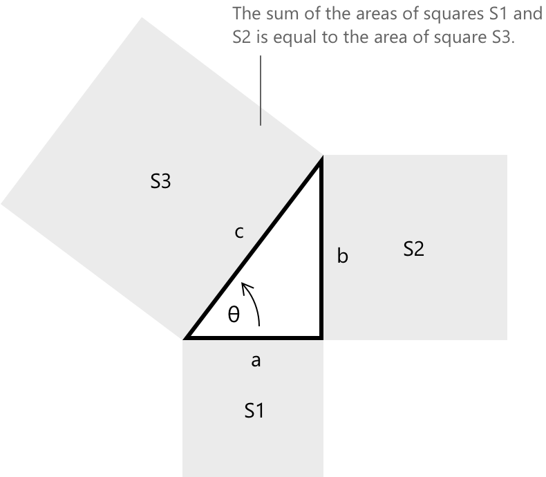
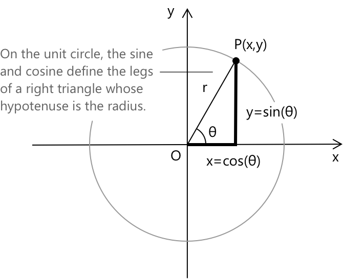
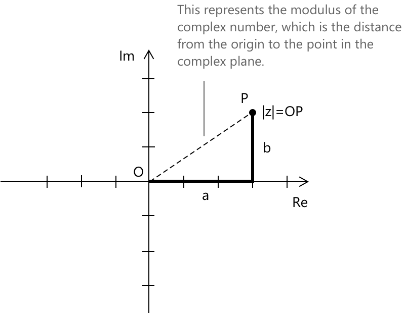

Теорема Піфагора
Формулювання
Теорема Піфагора стверджує, що в кожному прямокутному трикутнику квадрат гіпотенузи дорівнює сумі квадратів двох катетів:
\[ a^2 + b^2 = c^2 \]
де \( c \) — гіпотенуза, а \( a \), \( b \) — катети. Важливо зазначити, що теорема Піфагора застосовується виключно до прямокутних трикутників (трикутників, що містять рівно один кут у 90 градусів).

Дано прямокутний трикутник зі сторонами \( a \), \( b \) (катетами) та \( c \) (гіпотенузою), тоді зв'язки між сторонами згідно з теоремою Піфагора такі:
Гіпотенуза: \[ c = \sqrt{a^2 + b^2} \]
Катет \( a \): \[ a = \sqrt{c^2 - b^2} \]
Катет \( b \): \[ b = \sqrt{c^2 – a^2} \]
Також виконується обернена теорема Піфагора: якщо в трикутнику зі сторонами \( a \), \( b \) та \( c \) виконується рівність \( a^2 + b^2 = c^2 \), то трикутник є прямокутним.
Застосування
Теорема Піфагора може бути застосована щоразу, коли фігуру можна розбити таким чином, щоб вона містила прямокутний трикутник. Це корисно для визначення довжини сторін, діагоналей або інших відрізків, що належать початковій фігурі. Розглянемо, наприклад, квадрат, як показано на малюнку:
Провівши діагональ, можна розділити квадрат на два прямокутні трикутники, з яких можна вивести наступні зв'язки:
\[ \begin{aligned} \overline{DB}^2 &= \overline{AB}^2 + \overline{AD}^2 \\[0.5em] \overline{DB} &= \sqrt{\overline{AB}^2 + \overline{AD}^2} \end{aligned} \]
Цей самий принцип можна застосувати до рівнобічних або рівносторонніх трикутників, розділивши фігуру на два прямокутні трикутники за її висотою.
У трикутнику, зображеному на малюнку, ми можемо, отже, вивести наступне: \[ \begin{aligned} \overline{CB} &= \sqrt{\overline{CH}^2 + \overline{HB}^2} \\[0.5em] \overline{CH} &= \sqrt{\overline{CB}^2 - \overline{HB}^2} \\[0.5em] \overline{HB} &= \sqrt{\overline{CB}^2 - \overline{CH}^2} \end{aligned} \]
Загалом, цей принцип можна застосувати до всіх геометричних фігур, які можуть бути частково зведені до прямокутних трикутників, таких як прямокутники, ромби або частини трапецій.
Піфагорові трійки
Піфагорові трійки — це множини з трьох додатних цілих чисел \( (a, b, c) \), що задовольняють рівняння
\[ a^2 + b^2 = c^2 \]
Деякі приклади піфагорових трійок наведені нижче:
\[ \begin{aligned} (3,\ 4,\ 5) \\[0.5em] (5,\ 12,\ 13) \\[0.5em] (7,\ 24,\ 25) \\[0.5em] (8,\ 15,\ 17) \end{aligned} \]
Піфагорові трійки, що складаються з цілих чисел, які є попарно взаємно простими, називаються примітивними трійками. Усі примітивні трійки є піфагоровими трійками, але оберне твердження не є правильним: не всі піфагорові трійки є примітивними. Непримітивні трійки є просто кратними примітивній трійці.
Піфагорова тотожність на одиничному колі
Розглянемо тепер одиничне коло, тобто коло з радіусом r = 1. Згадуючи означення синуса та косинуса, ми можемо помітити, що в одиничному колі радіус відіграє роль гіпотенузи, косинус кута \( \theta \) відповідає горизонтальному катету (прилеглому боку), а синус кута \( \theta \) відповідає вертикальному катету (протилежному боку), утворюючи прямокутний трикутник, вписаний у коло.

Ми також бачили, що існує основна тригонометрична тотожність, яка пов'язує значення синуса та косинуса, яка має вигляд:
\[ \sin^2 \theta + \cos^2 \theta = 1 \]
Ця тотожність є тригонометричною версією теореми Піфагора, застосованою до прямокутного трикутника, утвореного всередині одиничного кола, де \( \sin \theta \) та \( \cos \theta \) є катетами, а радіус (гіпотенуза) дорівнює 1.
Теорема косинусів надає узагальнену версію теореми Піфагора, тоді як теорема синусів пропонує інший зв'язок між кутами та сторонами, що є корисним для розв'язання будь-якого типу трикутників.
Модуль комплексного числа та теорема Піфагора
Теорема Піфагора також знаходить природне застосування в області комплексних чисел, особливо при обчисленні модуля комплексного числа. Фактично, модуль представляє відстань від початку координат до точки на комплексній площині, яка обчислюється так само, як гіпотенуза прямокутного трикутника. Комплексне число можна записати у вигляді:
\[ z = a + bi \]
де \( a \) — дійсна частина, а \( b \) — уявна частина. На комплексній площині точка \( z \) відповідає координатам \( (a, b) \). Модуль \( |z| \) представляє відстань від початку координат \( (0, 0) \) до точки \( (a, b) \) і обчислюється за допомогою теореми Піфагора:
\[ |z| = \sqrt{a^2 + b^2} \]

Глосарій
-
Прямокутний трикутник: трикутник, який містить рівно один прямий кут (90 градусів).
-
Гіпотенуза: найдовша сторона прямокутного трикутника, що лежить навпроти прямого кута.
-
Катети: дві коротші сторони прямокутного трикутника, що утворюють прямий кут.
-
Піфагорові трійки: множина з трьох додатних цілих чисел \( (a, b, c) \), що задовольняють рівняння \( a^2 + b^2 = c^2 \).
-
Примітивні трійки: піфагорові трійки, що складаються з цілих чисел, які є попарно взаємно простими.
-
Одиничне коло: коло з радіусом, що дорівнює 1, з центром у початку координат системи координат.
-
Основна тригонометрична тотожність: відношення \( \sin^2 \theta + \cos^2 \theta = 1 \), яке безпосередньо випливає з теореми Піфагора, застосованої до одиничного кола.
-
Теорема косинусів: узагальнення теореми Піфагора, яке застосовується до будь-якого трикутника, а не тільки до прямокутних.